Puking Rainbows
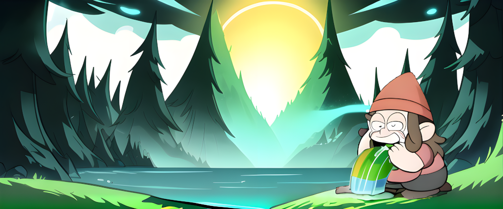
Shells support colored output. Some do so also during tab completion.
It can provide extra context like whether an issue is open (green) or closed (red). Or reflect the color of labels:
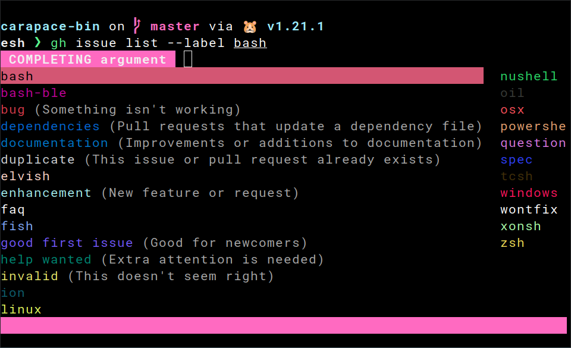
Here is how this works and how it is done in carapace...
ANSI escape sequences
Text style is set in the shell using an escape sequence like \e[31;42m.
This instructs the terminal that the text following it is red (31) with a green background (41).
It consists of
\eescape.[an opening square bracket.31;42a semicolon-separated list of escape codes.mthe letter m.
A common approach is to restore the default style using \e[0m afterwards.
echo "\e[1;2;4;35mdim bold underlined magenta\e[0m" # you might need `echo -e` for this
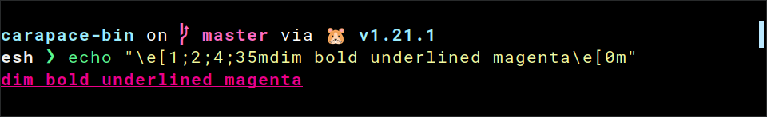
There are basic foreground colors (30-37), background colors (40-47), modes (1-9) and reset (0) to restore the default. 256-colors and RGB are also possible.
You can find a full list at ANSI Escape Sequences.
Elvish
This one is easy.
Styled
Elvish provides an abstraction for escape sequences using a list of human-readable keywords.
echo (styled "dim bold underlined magenta" dim bold underlined magenta)
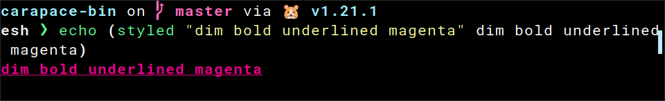
You can read more about this at styled.
Complex candidate
Adding colors to tab completion is thus pretty easy with edit:complex-candidate.
set edit:completion:arg-completer[example] = {|@args|
edit:complex-candidate true &display=(styled true green)' (true in green)'
edit:complex-candidate false &display=(styled false red)' (false in red)'
}
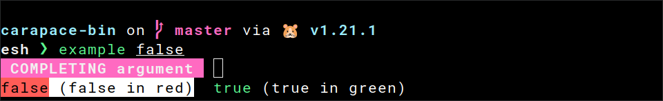
Powershell
This one is a bit tricky.
Backtick
First of all, the escape character is different in Powershell. It uses backtick instead of backslash.
echo "`e[1;2;4;35mdim bold underlined magenta`e[0m"
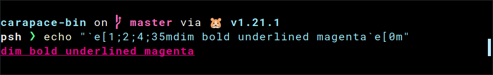
Completion result
CompletionResult allows escape sequences in the ListItemText to add color.
Function _example_completer {
[CompletionResult]::new("false", "`e[31mfalse`e[0m", [CompletionResultType]::ParameterValue, "false in red")
[CompletionResult]::new("true", "`e[32mtrue`e[0m", [CompletionResultType]::ParameterValue, "true in green")
}
Register-ArgumentCompleter -Native -CommandName 'example' -ScriptBlock (Get-Item "Function:_example_completer").ScriptBlock
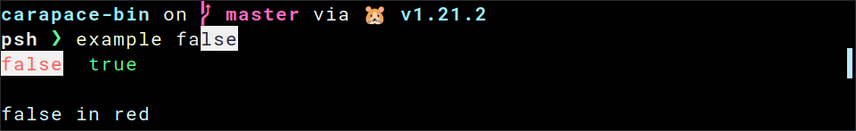
By default, it uses tooltips to show the descriptions. But the value by itself often gives no sign of what it represents.
ListItemText
Luckily, we can add the description to the ListItemText ourselves.
Function _example_completer {
[CompletionResult]::new("false", "`e[31mfalse`e[0m (false in red)", [CompletionResultType]::ParameterValue, " ")
[CompletionResult]::new("true", "`e[32mtrue`e[0m (true in green)", [CompletionResultType]::ParameterValue, " ")
}
Register-ArgumentCompleter -Native -CommandName 'example' -ScriptBlock (Get-Item "Function:_example_completer").ScriptBlock
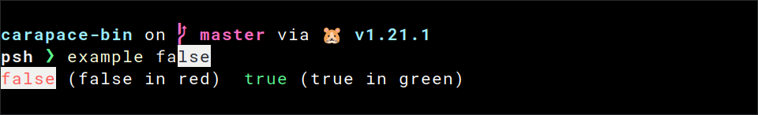
Tooltip must not be empty though, so we need to set it to a single space.
Selection
Fix the highlighting by setting Selection to inverse.
Set-PSReadLineOption -Colors @{ "Selection" = "`e[7m" }
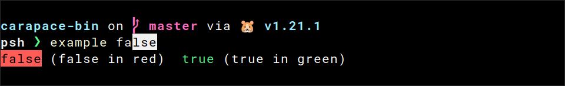
Description
And add some finishing touches to the description.
Function _example_completer {
[CompletionResult]::new("false", "`e[21;22;23;24;25;29m`e[31mfalse`e[21;22;23;24;25;29;39;49m`e[2m `e[2m(false in red)`e[21;22;23;24;25;29;39;49m`e[0m", [CompletionResultType]::ParameterValue, " ")
[CompletionResult]::new("true", "`e[21;22;23;24;25;29m`e[32mtrue`e[21;22;23;24;25;29;39;49m`e[2m `e[2m(true in green)`e[21;22;23;24;25;29;39;49m`e[0m", [CompletionResultType]::ParameterValue, " ")
}
Register-ArgumentCompleter -Native -CommandName 'example' -ScriptBlock (Get-Item "Function:_example_completer").ScriptBlock
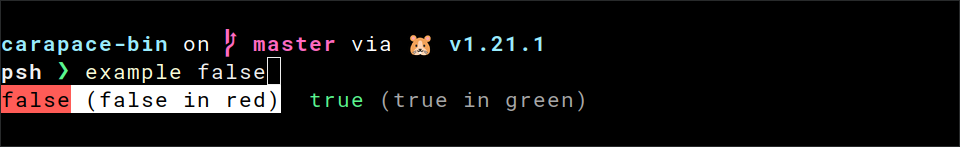
Zsh
This one is hard.
Arrangement
First, let's have a look at how Zsh arranges values for tab completion.
- Values without a description are arranged side-by-side.
- Values with a description have it appended in the format
-- descriptionIt is also aligned with other entries. - Values with the same description are also arranged side-by-side in front of the description.
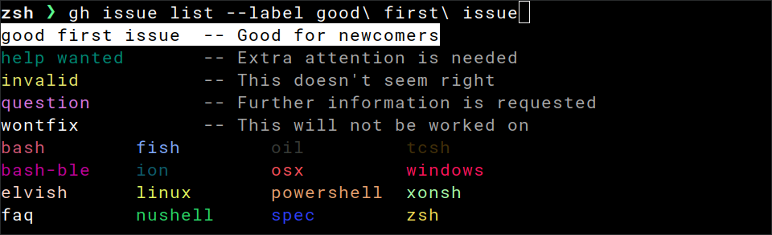
Zstyle
Colors are set using the zstyle list-colors.
With ${curcontext} we can configure it for the current context during tab completion.
zstyle ":completion:${curcontext}:*" list-colors "{...}"
List Colors
It contains a colon-separated list of patterns and formats. Formats are the semicolon-separated escape codes from ANSI escape sequences.
There is a simple and a complex way to specify the patterns.
=pattern=formatto apply one format.=(#b)(pattern1)(pattern2)=format0=format1=format2to apply many formats.
See here for a good explanation.
Pattern
Given the value "true", three patterns are relevant.
=(#b)(true)=0=32Set "true" to green (32).=(#b)(true)([ ]## -- *)=0=32=2Set "true" to green (32) and the description to dim (2).=(#b)(-- *)=0=2Set the description to dim for everything else.
Take this with a grain of salt, but there was an edge case in regards to the arrangement. So it's best to set both the pattern for with and without a description for each value.
Compdef
Putting it all together.
#compdef example
function _example_completion {
zstyle ":completion:${curcontext}:*" list-colors "=(#b)(false)([ ]## -- *)=0=31=2:=(#b)(false)=0=31:=(#b)(true)([ ]## -- *)=0=32=2:=(#b)(true)=0=32:=(#b)(-- *)=0=2"
vals=('true:true in green' 'false:false in red')
_describe 'values' vals
}
compquote '' 2>/dev/null && _example_completion
compdef _example_completion example
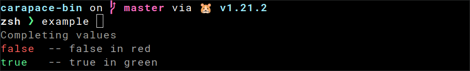
Carapace
Now to how carapace simplifies the above.
Style
Styles are adopted from Elvish.
There are colors like style.Red, modes like style.Dim and style.Of to combine them.
Action
They can be set directly with ActionStyledValues and ActionStyledValuesDescribed.
carapace.ActionStyledValues(
"true", style.Green,
"false", style.Red,
)
carapace.ActionStyledValuesDescribed(
"true", "true in green", style.Green,
"false", "false in red", style.Red,
)
Modifier
Or with the modifiers Style, StyleR and StyleF.
carapace.ActionValues(
"1",
"true",
).Style(style.Green)
carapace.ActionValues(
"0",
"false",
).StyleR(&style.Carapace.KeywordNegative)
carapace.ActionValues(
"true",
"false",
"unknown",
).StyleF(func(s string, sc style.Context) string {
switch s {
case "true":
return style.Green
case "false":
return style.Red
default:
return style.Default
}
})
Style functions
The following functions can be passed to StyleF for common highlighting tasks:
- ForPath highlights paths using the
LS_COLORSenvironment variable.

- ForPathExt does the same, but by extension only.
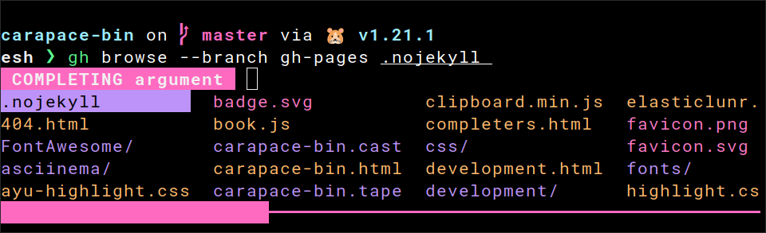
- ForLogLevel highlights log levels.
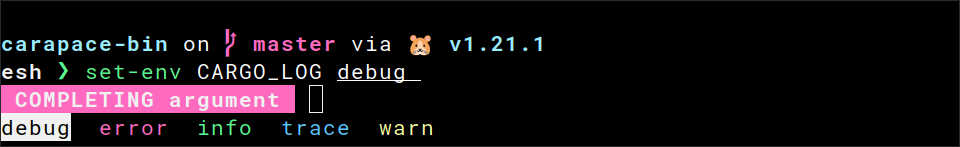
- ForKeyword highlights common keywords like true and false.
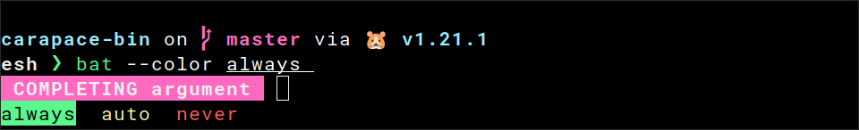
That's all
Enjoy the rainbow!
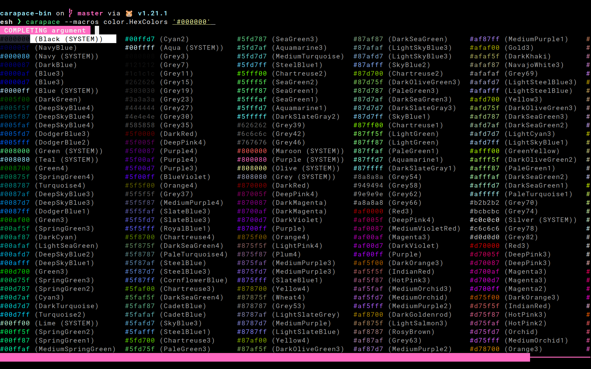